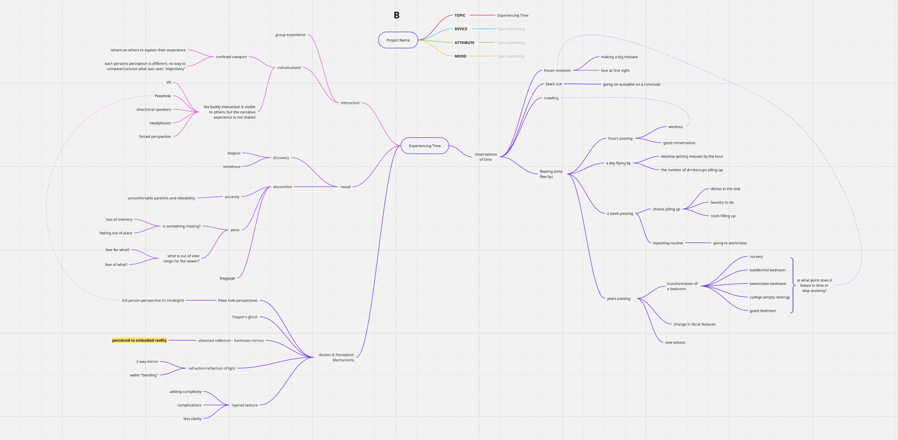
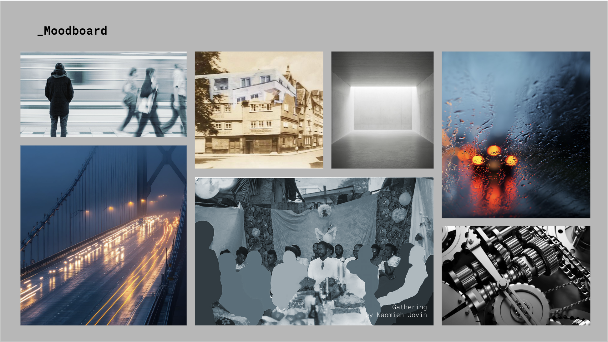
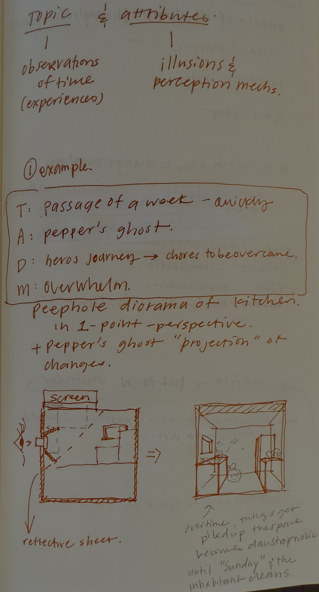
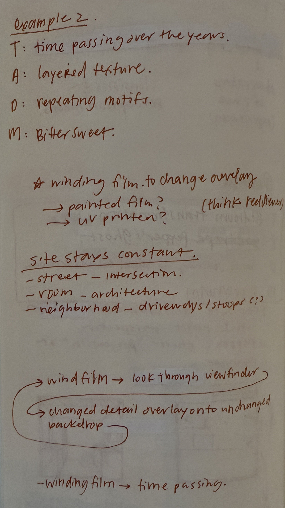

Project Mind Map

Further refining the project topic
This week's class exercise was really helpful in expanding my project ideas. Hearing other people trying
to talk about explain my project ideas, and sometimes filling in what they imagine the project will be
like added more depth, if identified potential directions that I want to clearly rule out (ie, evoking
positive emotion, not that I don't want people to be happy, but through this project, I want to present
the raw feelings that come from loss of time, memory, and reality).
Developments from the mind map
- narrowing down the "experiences of time" that I want to build the project around, at least for this class - in this case, I want to focus on the fleeting nature of time presented through a juxtaposition of changing details overlayed on elements that remain constant.
- I'm not sure if or how this will work into the final project, but I hope to also incorporate scale. Particularly the minuteness of humans within the universe
- this I knew coming into this class - I will be creating something physical. The mind map process forced me to think broadly about possible mechanisms other than Pepper's Ghost. More on that below.
Project Moodboard

Obscurity
I had a few images already in mind that fit with my moodboard. both these images utilize the act of redaction to convey a story.
- The first one was Gathering by Naomieh Jovin. Her photography often incorporates manual interventions, and in this image, she silhouettes figures in the image, changing the focus while adding depth to the narrative.
- The other image was a photo I took from SFMoMA in 2016. It was a collection of postcards, most of which had been altered with mixed media applications. This particular postcard caught my attention because the artist painted only a small section, partially obscuring the historical buildings in frame with fragments of the modern building that currently resides in the same location.
Then I used Adobe stock images to supplement the rest of the moodboard. The keywords that guided my image search were blur (to lean more into the obscured visuals) and industrial (to evoke a cold and mechanical sensation).
Topic + Attribute Development
I came into this class wanting to create more Pepper's Ghost installations, but was also worried about becoming known only for making them. The 2 project development ideas really opened up a new idea that I felt even more excited about.


Exercise #1
I started off with sticking to the Pepper's Ghost and testing how much enthusiasm I still felt for it
- The topic was to showcase the passage of time over the course of a week with a Pepper's Ghost diorama as the physical attribute. The goal is to convey a mood of overwhelm through a Hero's Journey as the narrative device (chores are the villian in this story). I know, I am sort of strongarming this one into the framework.
- Through a fish-eye lens peephold, the viewer is looking into a diorama of a model kitchen. Through a rotating interaction (like winding up an analog watch) the user is able to manipulate the passage of time in the model.
- The Pepper's Ghost "projection" superimposes the changes in a week onto the physical environment, such as the dishes piling up in and by the sink, trash accumulating, cooking less and take out containers appearing. Until finally the habitant is overwhelmed by the claustrophobia of their own space and clean (think "Sunday Reset")
Exercise #2
So… I exhausted the Pepper's Ghost idea, was not excited by the idea and mostly felt dread of the production process as I have already been through this before. This next idea is inspired by the postcard and the gears in the moodboard.
- The topic is witnessing time passing at a single site over the years - I am excited by the idea of a bedroom transforming from a baby nursery to a teenager's room to a defacto guest bedroom, and all the phases in between, which I hope will create a sense of bittersweet nostalgia as the mood. The attribute and device I'd like to explore here is the juxtaposition of layered texture and and repeating motifs. I wonder if these are interchangable elements within the framework...
- In a literal or symbolic manner, the interaction would be reminicent of a film camera, winding the film and taking a snapshot before moving to the next "time period". The "film" is preloaded with imagery from each phase of the room's transformation, leaving some areas unfinished allowing traces of the past to peek through.
- Ideally this is a mechanism that self resets so that film does not have to be removed, like in a film camera, in order to restart the experience. Though, the act of winding the film is symbolic of time passing, and we are technically unable to rewind and relive time. So that is something that should be considered in the interaction design.